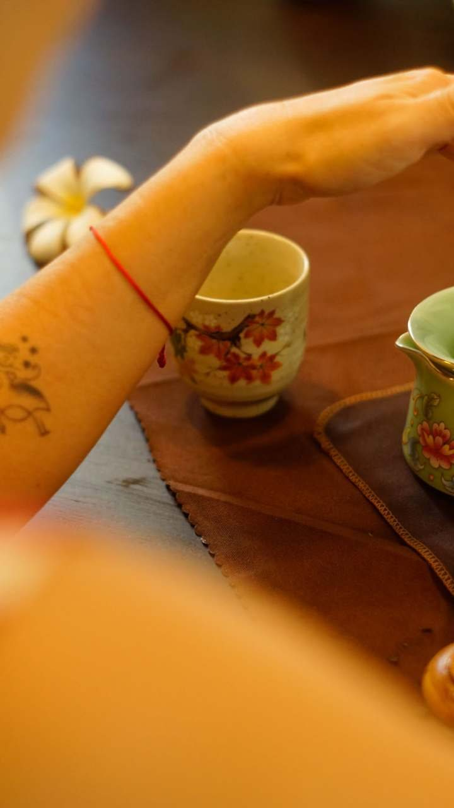
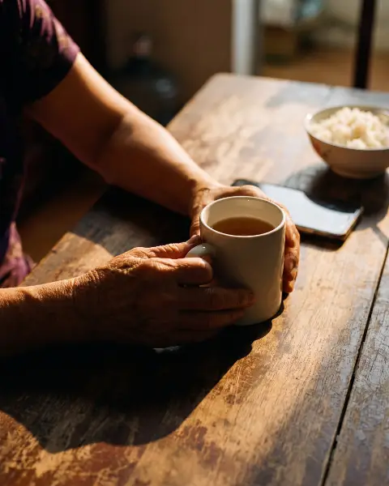
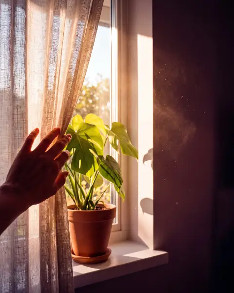

Chông chênh
Sáng nghĩ “thôi, đủ rồi”. Đến trưa lại sợ buông tay quá sớm, rồi cả đời tự hỏi “giá như”.
Dành cho em, khi đang đứng giữa giữ và buông
Có những điều em chưa nói được với ai.
Ở Buổi Nhìn Rõ, em được chia sẻ hết, không ai phán xét.
Và em sẽ biết chuyện gì đang thực sự xảy ra trong cuộc hôn nhân của mình, trước khi quyết định giữ hay buông.

Chông chênh
Sáng nghĩ “thôi, đủ rồi”. Đến trưa lại sợ buông tay quá sớm, rồi cả đời tự hỏi “giá như”.

Kiệt sức
Nói cũng nói rồi, im cũng im rồi, nhịn cũng nhịn rồi. Mọi thứ vẫn vậy.

Một mình
Có quá nhiều điều trong lòng mà không biết chia sẻ với ai. Người thân thì thương em quá, khó mà đứng ngoài.

Cần nhìn rõ
Chỉ mong có ai đó đứng ngoài nhìn vào và cho mình biết: cuộc hôn nhân này còn cứu được không?
Nếu em thấy mình trong dù chỉ một điều, Buổi Nhìn Rõ là dành cho em.
Xem 2 tiếng đó diễn ra thế nàoEm kể câu chuyện của mình, theo cách của em.
Coach của em lắng nghe, không phán xét, không bênh ai.
Rồi chị hỏi em những câu mà người thân không hỏi được, vì họ quá thương em.
Khi đang ở trong nỗi đau, rất khó để tự mình nhìn rõ. Em cần một người đứng ngoài.
Mình cùng nhìn vào ba câu hỏi
Hai người đã đi đến hôm nay bằng cách nào, và mỗi người đã cần gì mà không nhận được.
Sự tôn trọng, sự quan tâm, tình nghĩa, niềm tin. Đôi khi chúng vẫn còn đó, chỉ bị nỗi đau che mất.
Mỗi người có còn đủ sức để chữa lành, mềm lại, và cùng nhau bắt đầu lại không.
Em ra về với
Ghi chép của chị: những điều chị nhìn thấy, và những điều còn chưa rõ.
Chị cho em biết thẳng bước tiếp theo nên là gì. Nếu em không cần thêm gì nữa, chị cũng sẽ nói thật.
Khuyên em cố giữ bằng mọi giá.
Khuyên em ly hôn.
Bênh em để trách chồng.
Mời em thêm những buổi em không cần.
Giữ hay buông là quyết định của em. Việc của Toàn Vẹn là giúp em nhìn cho rõ.
Em sẽ làm việc riêng với một trong hai chị. Nếu em chưa biết chọn ai, Toàn Vẹn sẽ sắp xếp người phù hợp với câu chuyện của em.

Nhà sáng lập Toàn Vẹn. Master coach, CPCC.
Gần 30 năm làm coach ở Mỹ và nhiều nước, người phụ nữ châu Á đầu tiên có chứng chỉ CPCC. Chị từng tự mình đi qua đổ vỡ hôn nhân, nên chị hiểu cảm giác đứng giữa giữ và buông.
Sex coach được chứng nhận đầu tiên tại Việt Nam. ICF PCC.
Chị đang là vợ, là mẹ của một bé nhỏ, và hiểu những điều rất khó nói trong hôn nhân, kể cả chuyện chăn gối.
“Nhìn từ bên ngoài, gia đình vẫn có vẻ hoà thuận và ‘ổn’, nhưng cuộc sống hôn nhân lại thiếu tiếng nói chung và tình yêu bị sứt mẻ theo năm tháng, mà chỉ có người trong cuộc mới hiểu. Chị Mai Khôi đã giúp chúng tôi kết thúc cuộc hôn nhân không hạnh phúc thứ nhất và bắt đầu một cuộc hôn nhân mới, với cùng một người.”
1.500.000đ
2 tiếng làm việc riêng với chị Mai Khôi hoặc chị Minh Ngọc
Em có thể đi một mình hoặc cùng chồng
Ghi chép của chị và bước tiếp theo dành cho em
Online, em ngồi ở đâu cũng được, miễn là thấy riêng tư
Em chuyển khoản qua mã VietQR, Toàn Vẹn sẽ nhắn Zalo trong 24 giờ để hẹn lịch với em.
Mỗi tuần chỉ có [X] buổi. Mọi điều em chia sẻ đều được giữ kín.
Em cứ đi một mình. Em chia sẻ phần của em trước, rồi chị sẽ cho em biết những gì nhìn thấy được từ đó.
Không. Nếu cuộc hôn nhân này còn làm lại được, em cần biết. Nếu không, em cũng cần biết.
Buổi Nhìn Rõ trả lời một câu hỏi khác: có còn đáng để cố tiếp hay không.
Đây là coaching. Nếu chị thấy em hoặc chồng em cần trị liệu, chị sẽ nói thẳng và giới thiệu.
Có. Câu chuyện của em sẽ không xuất hiện ở bất kỳ đâu nếu em không đồng ý bằng văn bản.
Online, qua video call. Toàn Vẹn sẽ gửi đường link qua Zalo trước buổi. Em chỉ cần một góc riêng tư, yên tĩnh và một chiếc điện thoại hoặc máy tính.
Có. Em chọn khi đặt lịch, hoặc để Toàn Vẹn sắp xếp người phù hợp với câu chuyện của em.
Còn điều gì băn khoăn, em nhắn Zalo cho Toàn Vẹn biết nhé.